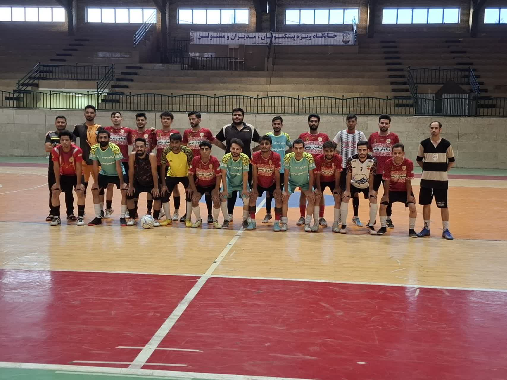
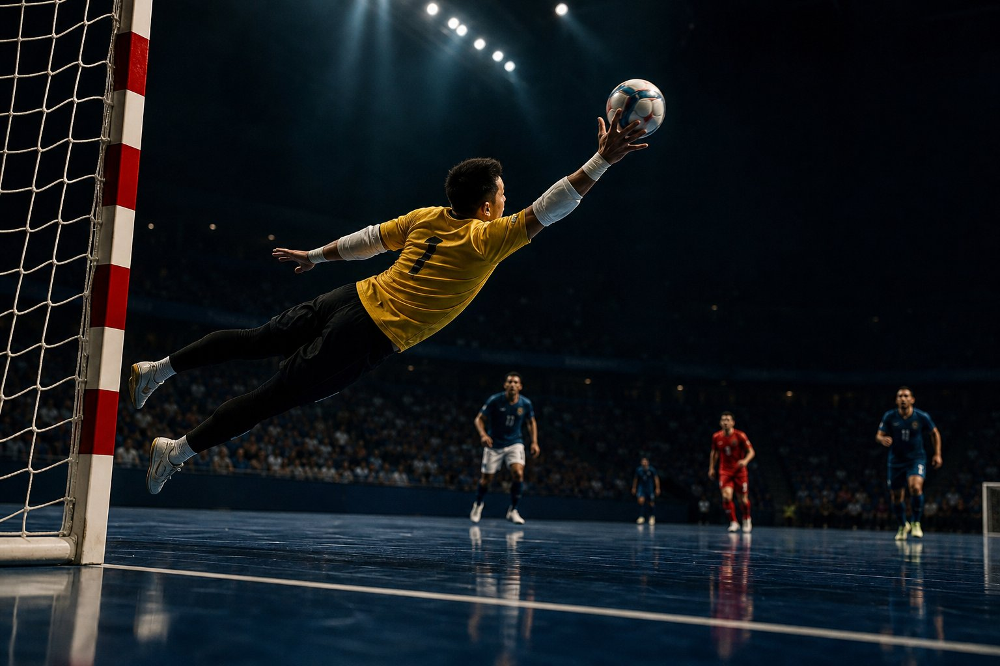
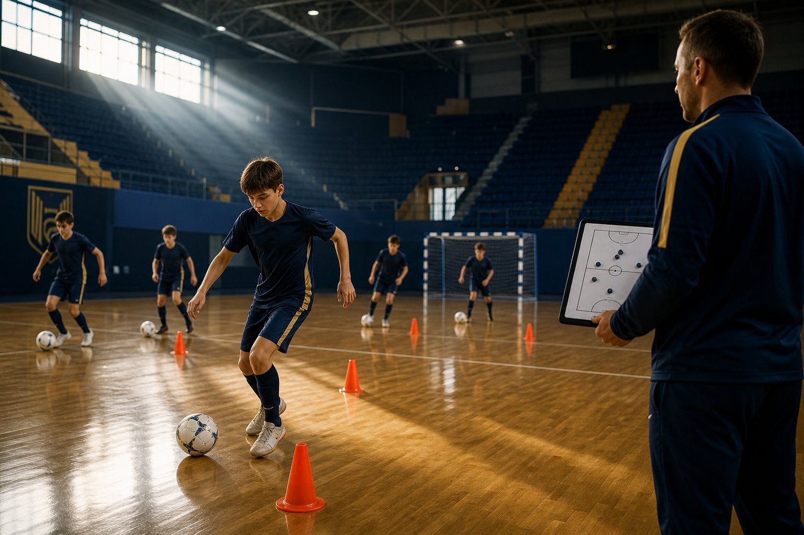

حسین طالبی
سرمربی تیم
با ۱۵ سال سابقهٔ مربیگری در لیگ برتر فوتسال ایران، تیمهای مختلفی را به قهرمانی رسانده؛ استاد بازیخوانی و مدیریت لحظات حساس.
۱۵+ سال تجربه۴ قهرمانیA مدرک AFC
دروازه در حال باز شدن است…
از سال ۱۳۹۸ با یک رؤیا شروع کردیم: ساختن خانوادهای که روی زمین فوتسال با قلبش بازی کند. اینجا خانهٔ تعصب، سرعت و پیروزی است.

پرنس با هدف پرورش استعدادهای جوان بیرجند متولد شد.
در سومین فصل حضور، جام قهرمانی خراسان جنوبی را بالای سر بردیم.
نایبقهرمانی منطقهای و معرفی ۵ بازیکن به تیمهای لیگ برتری.
صدرنشین فعلی لیگ؛ در مسیر تکرار قهرمانی با نسل طلایی جوانان.
کارتها رو با موس بچرخون — سهبعدیان! 🎮
سرمربی تیم
با ۱۵ سال سابقهٔ مربیگری در لیگ برتر فوتسال ایران، تیمهای مختلفی را به قهرمانی رسانده؛ استاد بازیخوانی و مدیریت لحظات حساس.

مربی تخصصی و آنالیز
مدرس رسمی کنفدراسیون فوتبال آسیا و متخصص آنالیز تاکتیک؛ مغز دادهمحور تیم که هر بازی حریف را پیش از سوت آغاز رمزگشایی میکند.

مربی دروازهبانها
با ۸ سال سابقهٔ مربیگری تخصصی دروازهبانان و از مدرسان برجستهٔ فدراسیون؛ سازندهٔ دیوار مستحکم خط آخر پرنس.
✨ دربی حساس خراسان جنوبی؛ دو تیم برای صدر جدول میجنگند. جو ورزشگاه فوقالعاده خواهد بود — این نبرد را از دست نده!
⚽ گلها: رضایی (۲)، کریمی، احمدی
⚽ گلها: محمدی (۲)، رضایی — کامبک در دقایق پایانی!
⚽ گلها: کریمی، حسینی — دربی پرهیجان نیمفصل
روی هر عکس کلیک کن تا سینمایی ببینیش 🎬


در لیگها و تورنمنتهای استانی و منطقهای
حضور ثابت در فینالهای خراسان جنوبی
صادرات استعداد از آکادمی پرنس به سطح اول کشور
رکورد خانگی شکستناپذیری در سالن بصیریپور
اول پستت رو روی زمین انتخاب کن، بعد فرم رو پر کن — ۳۰ ثانیه بیشتر طول نمیکشه ⚡
روی یکی از نقاط زمین کلیک کن
🔹 پس از ثبت، کارشناسان ما ظرف ۲۴ ساعت برای تست فنی تماس میگیرند.
کافی است فرم ثبتنام همین صفحه را کامل کنی. بعد از تماس کارشناسان، در یک جلسه تست فنی رایگان شرکت میکنی؛ سن، آمادگی جسمانی و پست تخصصیات ارزیابی میشود و بر اساس سطح، در تیم اصلی یا آکادمی پرنس قرار میگیری.
تمرینهای تیم اصلی سه جلسه در هفته در سالنهای بصیریپور و الغدیر بیرجند برگزار میشود. برنامه دقیق هر ماه از طریق پیامک و کانال رسمی باشگاه اعلام میشود.
بله؛ همهٔ بازیکنان تیم اصلی قرارداد رسمی فصل و بیمهٔ ورزشی دارند و هزینهٔ اعزام به مسابقات استانی و منطقهای توسط باشگاه تأمین میشود.
با دکمهٔ «رزرو بلیت» در بخش مسابقات میتوانی درخواستت را ثبت کنی؛ همچنین گیشهٔ سالن از دو ساعت پیش از بازی باز است. ظرفیت سالن بصیریپور ۲۰۰۰ نفر است — بازیهای دربی زود تمام میشود! 🔥